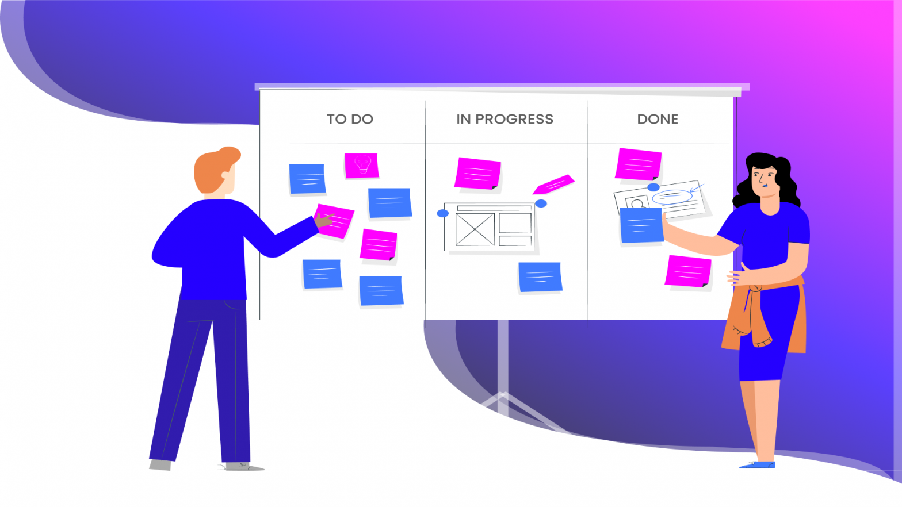

Scrum
ScrumEl marco “Scrum”, tal como lo conocemos hoy, se introdujo por primera vez en un artículo de la Harvard Business Review en 1986 El nuevo juego de desarrollo de nuevos productos (The New New Product Development Game), escrito por Hirotaka Takeuchi e Ikujiro Nonaka. Takeuchi y Nonaka tomaron el término “Scrum” del rugby, explicando que “como en el rugby, los miembros del equipo se pasan la pelota entre sí, a medida que avanzan como una unidad por el campo de juego”.
Recomendación: Establecer reuniones diarias de seguimiento para mantener a todo el equipo actualizado sobre el progreso del proyecto

Programación XP
Programación XPEsta es una metodología ágil creada para responder a ambientes muy cambiantes donde se necesita una retroalimentación permanente. Ella busca enfatizar la adaptabilidad de un proyecto, sólo así se conseguirá el resultado esperado. Al igual que otras metodologías ágiles, la programación extrema es una método de desarrollo de software dividido en sprints de trabajo. Los marcos ágiles siguen un proceso iterativo, en el que se completa y revisa el marco al final de cada sprint, refinándolo para adaptarlo a los requisitos cambiantes y alcanzar la eficiencia máxima.
Recomendación: Fomentar la colaboración y la comunicación constante entre los miembros del equipo

Kanban
KanbanKanban es una palabra japonesa que en español significa “tarjeta visual”. Esta metodología sugiere una comunicación en tiempo real y controla el trabajo a través de una línea de producción. Es decir, se crean tres columnas: pendientes, en proceso y terminadas. De esa forma, es posible clasificar las tareas y visualizar fácilmente sus avances. Kanban es un marco popular utilizado para implementar el desarrollo de software ágil y de DevOps. Requiere una comunicación en tiempo real de la capacidad y la plena transparencia del trabajo. Los artículos de trabajo están representados visualmente en una , permitiendo a los miembros del equipo ver el estado de cada pieza de trabajo en cualquier momento.
Recomendación: Establecer un Kanban Board claro y actualizado para que el equipo tenga una visión clara de las tareas pendientes, en progreso y completadas.
ICONIX
ICONIXIconix es una metodología pesada-ligera de Desarrollo del Software que se halla a medio camino entre un RUP (Rational Unified Process) y un XP (eXtreme Programming). Iconix deriva directamente del RUP y su fundamento es el hecho de que un 80% de los casos pueden ser resueltos tansolo con un uso del 20% del UML, con lo cual se simplifica muchísimo el proceso sin perder documentación al dejar solo aquello que es necesario. Esto implica un uso dinámico del UML de tal forma que siempre se pueden utilizar otros diagramas además de los ya estipulados si se cree conveniente. Iconix se guía a través de casos de uso y sigue un ciclo de vida iterativo e incremental. El objetivo es que a partir de los casos de uso se obtenga el sistema final.
Recomendación: Fomentar la documentación clara y concisa del diseño y la implementación del software